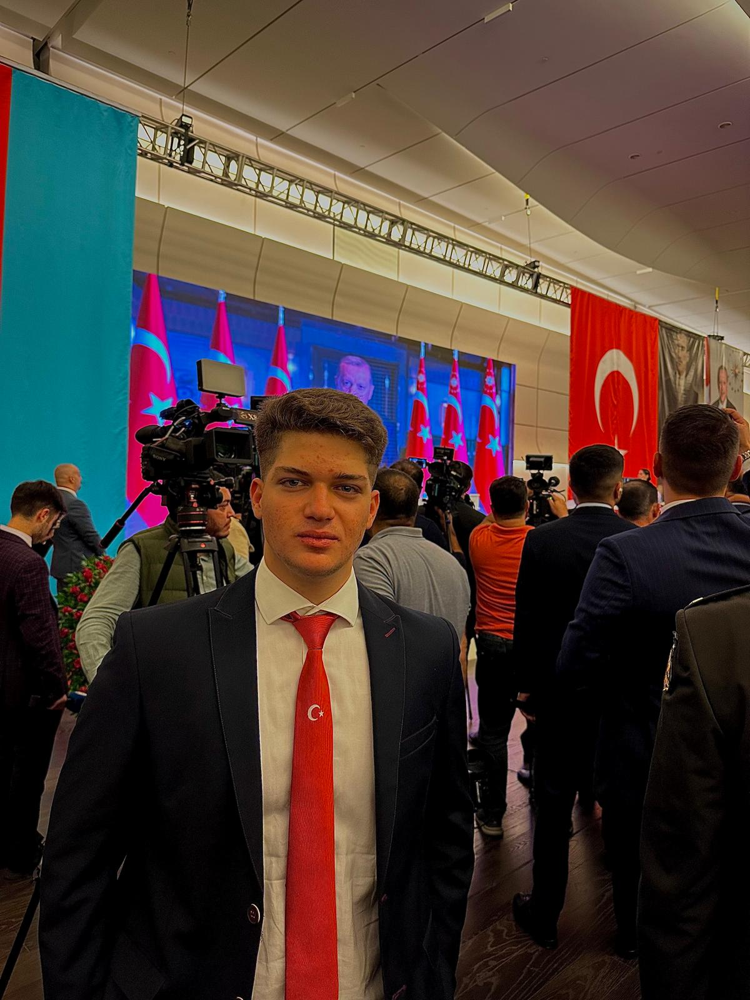

-

Olcayto Noyan
StudentHello everyone, that`s Olcayto Noyan. I am the first year Student in Azerbaijan/Baku and it is my second year in Baku. As an international student who comes from Turkey i get a lot of friends . We made a few projects successfully with my groupmates of TechDragons. Hour of Code event is one of those. That can I say about the Hour of Code event is, it was an event which collaborated the students for coding and teaching. Teaching the things we learned about programming in front of the class made us feel valuable. Thanks a lot to our proffessor Dr. Araz Yusubov for his guidance. I hope the website we created would be useful for those who interested into programming and Information Technologies. -
Amir Reza
StudentHey everyone, I'm Amir Reza. I'm currently involved in TechDragons, a group project with my classmates, where we organize events like the Hour of Code. This event is all about uniting students to explore and show their coding skills. With the help of our professor, Dr.Araz Yusubov, we made several projects, including creating a website and hosting an Hour of Code event in our city. We are excited to see our project`s impact on people interested in programming and web development, and I'm looking forward to more collaborative projects in the future. -
Fidan Majnunova
StudentHi everyone, I am Fidan Majnunova from TechDragons and a first-year SITE student at ADA university. I've always been passionate about learning and exploring programming languages and software development. That`s why in my studies, I've been joining coding learning courses such as C++, Python and writing codes on my own outside of my university studies. I've learned so much from these experiences, also gained great computer skills and can't wait to see where they take me in the future. This time, I am involved in our group project that is about creating a website with our team members whose pictures you can see on the current page. In fact, we have done other activities together throughout the semester, one of them is Hour of Code which is available on our website as well, you can go and check it. All in all, I hope this website we created will be informative for everyone who are interested in web development. I'm eager to dive into more collaborative projects and continue making a positive difference in my career. -
Ilyas Mustafali
StudentHello everyone, my full name is Ilyas Mustafali. I am 19 years old and I study at ADA University as a freshman. We've accomplished several projects alongside my TechDragons team, one of which is the successful execution of the "Hour of Code" event. Reflecting on the event, it served as a platform for students to come together for coding and educational purposes. Being able to impart our programming knowledge to our peers during the event was a rewarding experience. A special thanks to our professor, Dr. Araz Yusubov, for his invaluable guidance throughout. We're optimistic that the website we developed will prove beneficial to individuals especially who love programming.